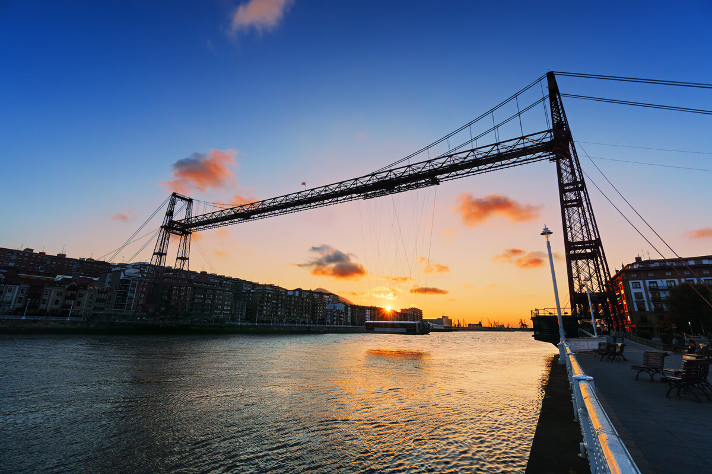
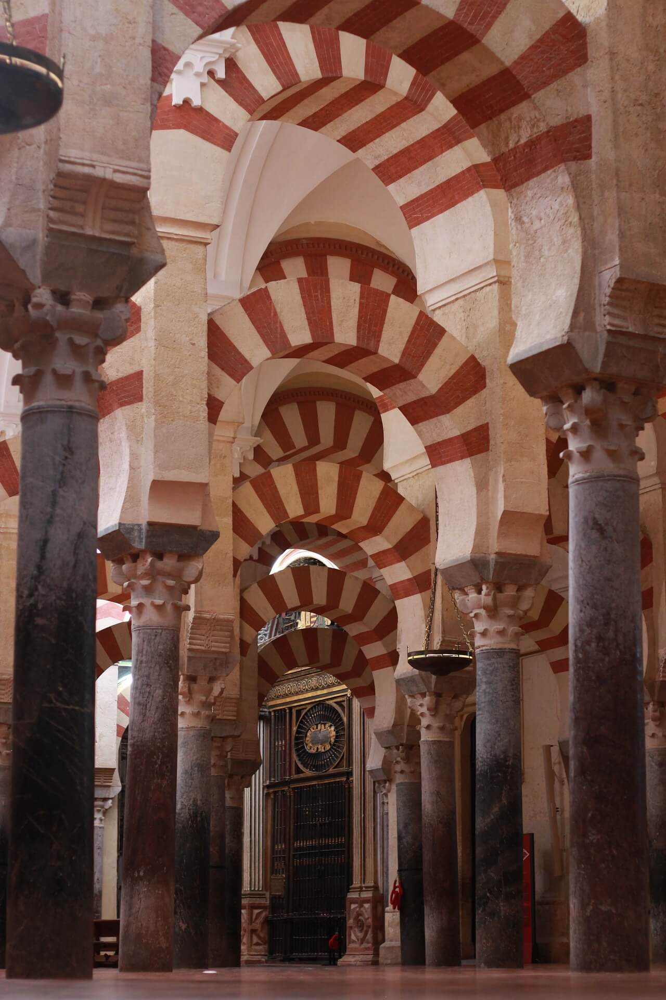
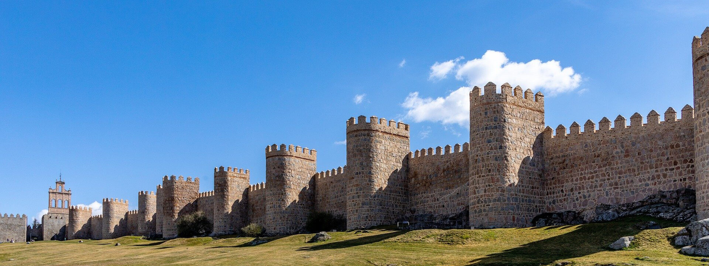

What is a World Heritage Site?
It is a landmark or area with legal protection by an international convention administered by the UNESCO. World Heritage Sites are designated by UNESCO for having cultural, historical, scientific or other form of significance.
Learn more about WHS
Vizcaya Bridge

How many WH Sites are there in Spain?
Spain has 48 total sites inscribed on the list, third only to China (55) and Italy (55). Of these 48 sites, 42 are cultural, 4 are natural, and 2 are mixed (meeting both cultural and natural criteria), as determined by the organization's selection criteria.
Read moreSpanish WH Sites
These are some of the most iconic World Heritage sites located in Spain:
- Alhambra, Generalife and Albayzín, Granada
- Old Town and Aqueduct, Segovia
- Works of Antoni Gaudí, Barcelona
- Route of Santiago de Compostela
- Archaeological Site of Atapuerca
Mosque, Córdoba

Walled City, Ávila
